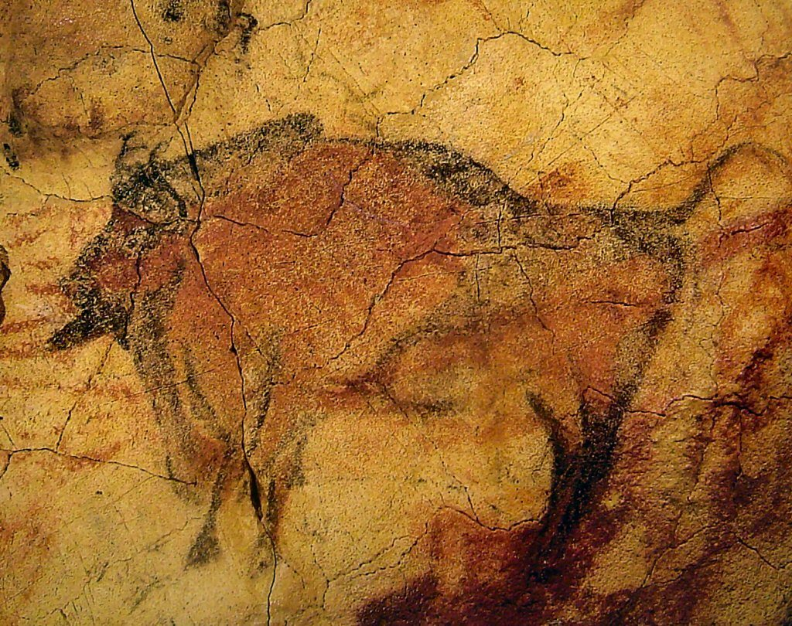

Kapittel 3 · s. 18–21
Livet som jegere og sankere

«… i mesteparten av menneskets historie har folk levd av å jakte og sanke ville dyr og planter.»
Kort fortalt
For om lag 11 800 år siden slo en liten gruppe mennesker seg ned ved Pauler gård i Brunlanes, nær dagens Larvik. Boplassen er en av de eldste som er funnet i Norge, og arkeologene har funnet rundt 20 000 gjenstander der. Gruppen levde slik mennesker har levd i nesten hele sin historie: som jegere og sankere.
Hovedpunkter
Livet ved kysten
Alle boplassene fra eldre steinalder i Norge ligger ved kysten, fordi de er fra slutten av istiden. Først for om lag 9000 år siden smeltet isen for alvor, og folk tok seg inn i landet. Pionerene i Brunlanes etterlot seg flint, som ikke finnes naturlig i Norge. Derfor kom de trolig fra Sør-Skandinavia eller kontinentet.
Små grupper på vandring
Jegere må følge dyrene, og da er det upraktisk å være mange. Gruppene fikk trolig få barn, fordi det er vanskelig å bære mange små barn over lange strekninger. De eide bare det de trengte.
Alle kunne mye om alt
De fleste voksne kjente til mellom 200 og 300 nyttevekster. Kunnskapen var jevnt fordelt, og spesialiseringen var lav. Gruppen kunne ikke være avhengig av én person: Hva om den eneste som kunne lage pilspisser, døde under jakten?
Kjønnsroller
Arkeologen Ingrid Fuglestvedt mener kunnskapen var ganske likt fordelt mellom kvinner og menn. Menn jaktet trolig mest storvilt, men en kvinnegrav i Skåne fra 7000-tallet f.Kr. tyder på at kvinnen var storviltjeger. Rollene var mindre skarpe enn i de senere jordbrukssamfunnene.
Megafaunaen forsvant
Da mennesket kom til Europa og Asia, levde det mammut, kjempehjort, hulebjørn og mange andre store dyr der. Nesten alle døde ut. Klimaet ble varmere da istiden tok slutt, men jakt var trolig også en årsak: Dyrene utenfor Afrika hadde aldri møtt mennesker og hadde ikke lært å frykte dem.
Når begynte antropocen?
Stadig flere forskere mener vi lever i en ny geologisk epoke, antropocen, menneskets tidsalder. Boken spør når mennesket begynte å sette slike spor. Teller jegerne i Brunlanes med, eller var fotavtrykket deres for lett?
Funnsteder i Norge
- Pauler gård, Brunlanes om lag 11 800 år siden
- Tønsnes ved Tromsø 9500 år gamle hustufter, kanskje de eldste sporene etter faste bosetninger i Norden
- Vistehulen ved Stavanger de eldste sporene er om lag 8000 år gamle
- Simavik i Troms og Sarnes ved Nordkapp boplasser fra samme periode
Før
Homo sapiens har oppstått og spredt seg over hele kloden. Den kognitive revolusjonen har gitt store teknologiske og kulturelle endringer.
Etter
Jordbruksrevolusjonen og de første sivilisasjonene.